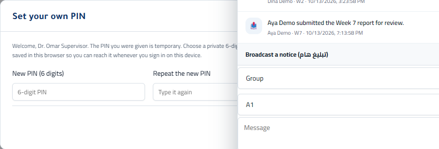
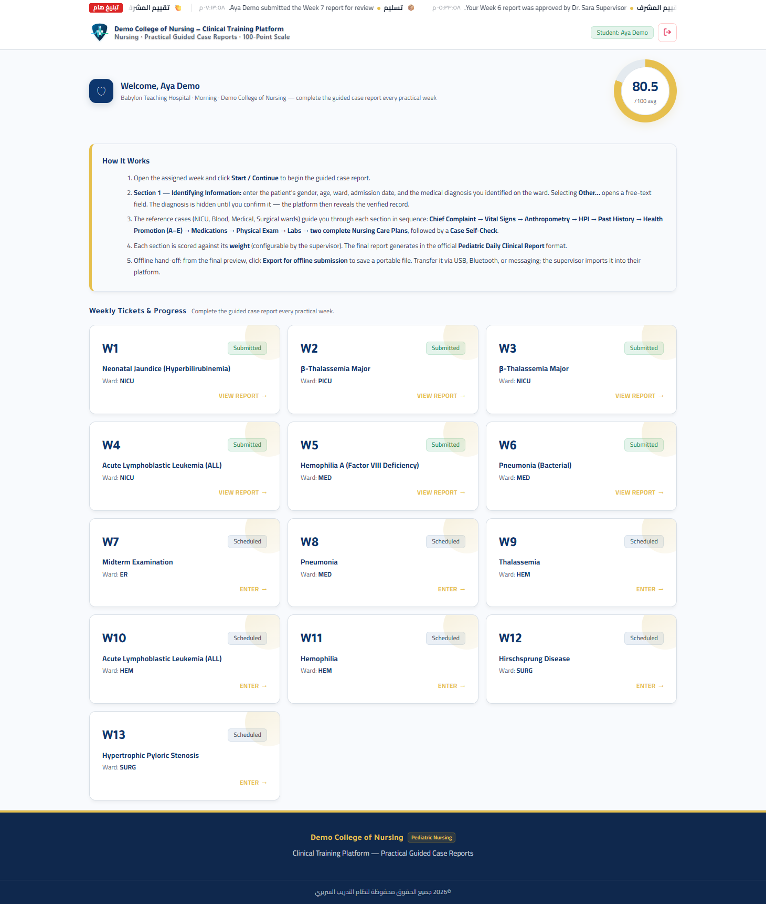
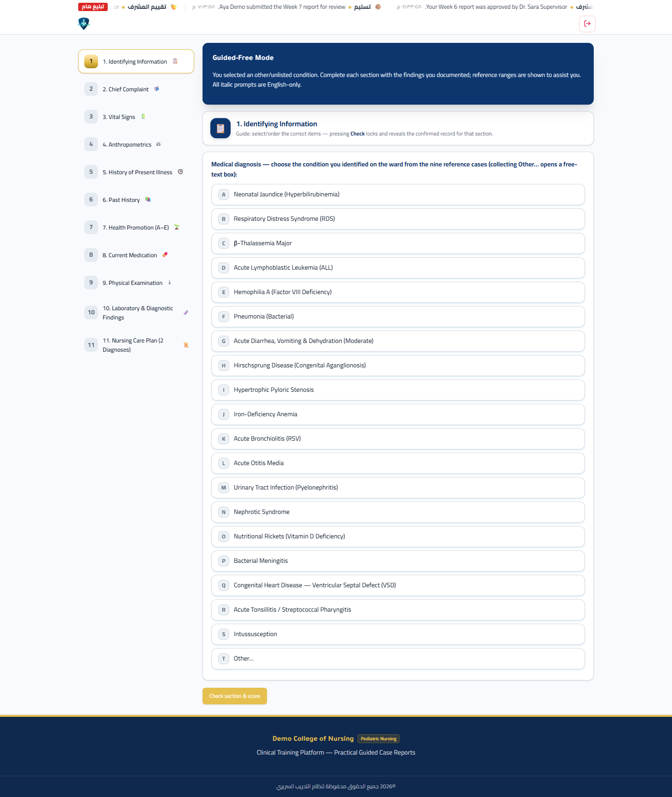
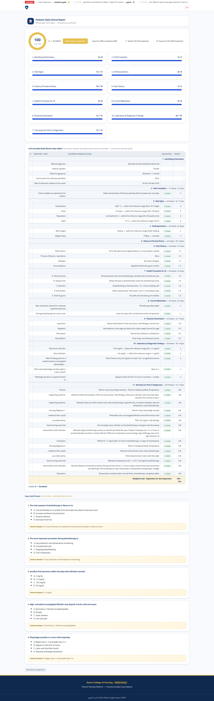
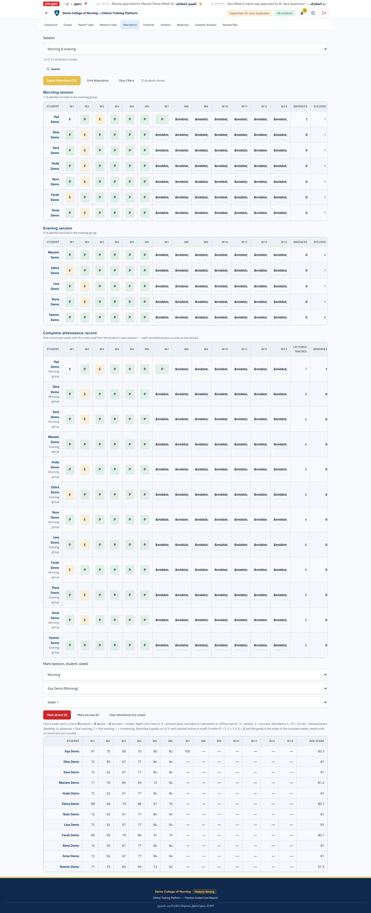
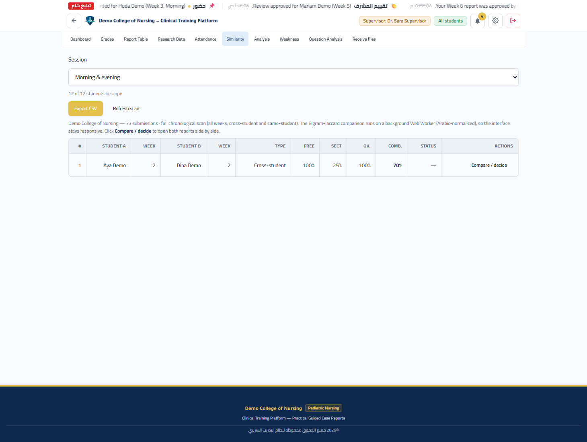
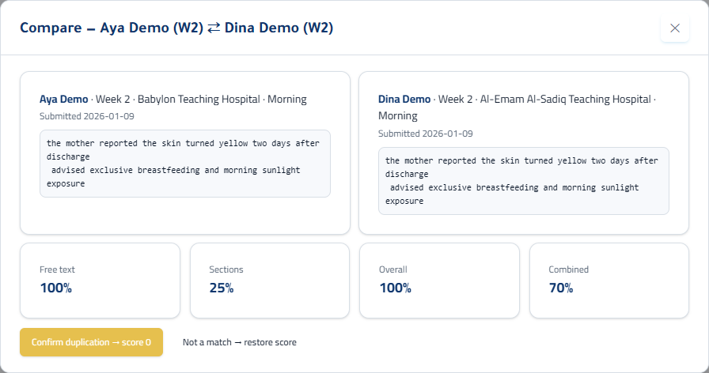
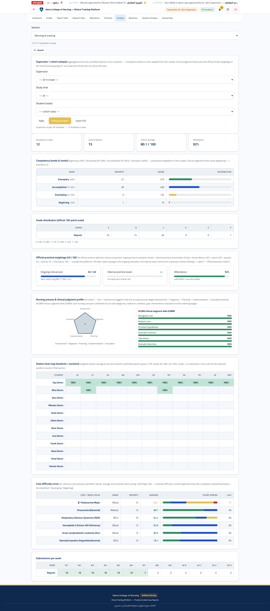

دليل الاستخدام الكامل
دليل عملي يشرح المنصة كما تعمل فعليًا. كل شاشة مصوّرة هنا لقطة حقيقية من المنصة أثناء العمل.
محور هذا الدليل: الطالب ثم المشرف، مع إشارة موجزة إلى شاشات الإدارة.
1) ما هي المنصة ولماذا وُجدت
المنصة تدرّب طلاب التمريض (حقل الأطفال) على كتابة التقرير اليومي للطفل بشكل موجَّه ومقيَّم، أسبوعًا بعد أسبوع خلال الفصل العملي.
الطالب لا يكتب من فراغ: تعرض المنصة حالة سريرية مرجعية (طفل بأعراض وفحوصات وخطة تمريضية)، وتقوده عبر أحد عشر قسمًا بالترتيب، ثم تحسب درجة من 100 حسب وزن كل قسم. المشرف يرى النتائج ويقيّمها ويترك ملاحظته، والإدارة تدير الإعدادات والنسخ الاحتياطي.
2) وجهان على الجهاز نفسه: التطبيق والخادم
| الوجه | المنفذ | مهمته |
|---|---|---|
| التطبيق (واجهة المستخدم) | http://127.0.0.1:9080/ | الشاشة التي تفتحها في المتصفح: دخول الطالب والمشرف، كتابة التقرير، عرض النتائج. |
| الخادم المركزي (API) | http://127.0.0.1:8080/ | خدمة داخلية تحفظ الحالة وتوفّر المزامنة بين الأجهزة، وتُنشئ النسخ الاحتياطية تلقائيًا. |
3) الأدوار الثلاثة ونطاق الرؤية
| الدور | كيف يدخل | ماذا يرى |
|---|---|---|
| الطالب Student | اسمه من الكشف + رقمه السري | صفحته وأسابيعه وتقاريره ودرجاته وملاحظات المشرف الخاصة به فقط. |
| المشرف Supervisor | اسمه من قائمة الكادر + رقمه السري | طلاب نطاقه فقط (المجموعة أو المستشفى أو الفترة التي يشرف عليها): درجاتهم وحضورهم وتقاريرهم وإشعاراتهم. |
| المدير Administrator | رابط صغير «Administrator sign-in» داخل شاشة الدخول — ويظهر على جهاز الاستضافة فقط | كل الطلاب والإعدادات والأوزان والكادر والنسخ الاحتياطي. |
4) أول تشغيل وضبط رقم المنصة
على جهاز جديد فارغ، تظهر شاشة الدخول بالشكل التالي (حقلا الإدخال فقط: الاسم والرقم السري):

قبل أي دخول إداري، يجب ضبط رقم المنصة السري. اضغط رابط «Administrator sign-in» أسفل البطاقة (يظهر على جهاز الاستضافة فقط)، فتظهر نافذة إعداد الرقم:

5) الدخول الموحّد: اسم واحد ورقم سري واحد
كل المستخدمين يدخلون من الشاشة نفسها. دورك يُحدَّد تلقائيًا من الكشف (طالب أو مشرف).
خطوات الدخول
- في خانة «Your name» اكتب حرفًا أو اثنين من اسمك؛ تظهر قائمة منسدلة بالأسماء المطابقة (يظهر مع كل اسم: طالب أم مشرف). اختر اسمك.
- اكتب رقمك السري المكوّن من 6 أرقام في خانة «Your secret PIN».
- اضغط «Enter». المنصة تتعرّف على دورك تلقائيًا وتفتح صفحتك.
أول دخول للمشرف: يضبط رقمه بنفسه
عندما يمنح المدير للمشرف رقمًا مبدئيًا، يُجبر المشرف عند أول دخول على تعيين رقم سري خاص به لا يعرفه أحد غيره:

ماذا لو نسي شخص رقمه؟
- الطالب: يسأل مشرفه؛ والمشرف/الإدارة يمنح رقمًا جديدًا من صفحة الكادر أو الإعدادات.
- المشرف: يفتح «إعدادات المشرف» من زر الترس أعلى الصفحة ليغيّر رقمه في أي وقت على هذا الجهاز.
- المدير: يعيد ضبط رقم المنصة من شاشات الإدارة على جهاز الاستضافة.
6) واجهة الطالب: الصفحة الرئيسية والأسابيع
بعد دخول الطالب تظهر صفحته الرئيسية: بياناته، وبطاقات الأسابيع، وحالة كل أسبوع.

كل أسبوع يحمل حالة واضحة:
- متاح (Open) — يمكنك بدء التقرير الآن.
- مُسلَّم/مُغلق — تم تقديم تقرير ذلك الأسبوع، ويظهر معه الدرجة والمراجعة.
- لم يُفتح بعد — يفتحه المشرف في وقته.
7) التقرير الموجّه خطوة بخطوة
عند فتح أسبوع، تبدأ من قسم المعلومات التعريفية. في هذا القسم تختار التشخيص الذي لاحظته على الحالة. بعد اختياره تظهر بطاقة الحالة المرجعية الكاملة (وصف الطفل والسيناريو والعلامات) لترافقك في باقي الأقسام.


كيف يُبنى التقرير
- أجب عن أسئلة القسم الحالي. الأسئلة أنواع: اختيار واحد، اختيار متعدد، ترتيب، قيمة قياس (رقمية) مع تصنيفها (أقل/داخل/أعلى المدى المرجعي)، أو كتابة حرة قصيرة.
- اضغط «Check section & score» لقفل القسم — فيتحوّل إلى سجل مؤكَّد يعرض إجابتك والتغذية الراجعة.
- انتقل للقسم التالي عبر «Next». يمكنك الرجوع بـ«Previous» في أي وقت.
- عند آخر قسم، يظهر زر «Assemble final report» لتجميع التقرير النهائي.
8) الأقسام الأحد عشر وأوزانها
التقرير مبني من 11 قسمًا، لكل قسم وزن، ومجموع الأوزان 100 بالضبط. الأوزان الافتراضية:
| # | القسم | العنوان داخل المنصة | الوزن |
|---|---|---|---|
| 1 | المعلومات التعريفية | Identifying Information | 8 |
| 2 | الشكوى الرئيسية | Chief Complaint | 5 |
| 3 | العلامات الحيوية | Vital Signs | 12 |
| 4 | القياسات الأنثروبومترية | Anthropometrics | 8 |
| 5 | تاريخ المرض الحالي | History of Present Illness | 10 |
| 6 | التاريخ المرضي السابق | Past History | 5 |
| 7 | التثقيف الصحي | Health Promotion (A–E) | 8 |
| 8 | الأدوية الحالية | Current Medication | 8 |
| 9 | الفحص السريري | Physical Examination | 14 |
| 10 | الفحوصات المختبرية والتشخيصية | Laboratory & Diagnostic Findings | 10 |
| 11 | خطة التمريض (تشخيصان كاملان) | Nursing Care Plan (2 Diagnoses) | 12 |
| المجموع | 100 | ||
9) الحالات السريرية المرجعية (19 حالة)
تحتوي المنصة تسع عشرة حالة موزعة على أربعة أجنحة، لكل حالة طفلها وسيناريوها وعلاماتها وفحوصاتها وخطتها التمريضية:
| الجناح | الحالة | الطفل |
|---|---|---|
| العناية (NICU) | اليرقان الوليدي (Neonatal Jaundice) | نورة — أنثى، 3 أيام |
| متلازمة الضائقة التنفسية (RDS) | ميري — أنثى، 4 أيام، خديج | |
| جناح الدم (Blood) | الثلاسيميا الكبرى (β-Thalassemia Major) | علي — ذكر، 3 سنوات |
| اللوكيميا اللمفاوية الحادة (ALL) | مارك — ذكر، 5 سنوات | |
| الهيموفيليا A (Hemophilia A) | بريان — ذكر، 18 شهرًا | |
| الجناح الباطني (Medical) | الالتهاب الرئوي الجرثومي (Pneumonia) | سارة — أنثى، 14 شهرًا |
| الإسهال والتقيؤ والجفاف المتوسط | حسين — ذكر، 9 أشهر | |
| فقر الدم بعوز الحديد (Iron-Deficiency Anemia) | سارة علي — أنثى، 18 شهرًا | |
| التهاب القصيبات الحاد (Bronchiolitis / RSV) | أحمد — ذكر، 5 أشهر | |
| التهاب الأذن الوسطى الحاد (Otitis Media) | زينب — أنثى، سنتان | |
| التهاب المسالك البولية / الحويضة (UTI) | مريم — أنثى، 3 سنوات | |
| المتلازمة الكلائية (Nephrotic Syndrome) | عمر — ذكر، 4 سنوات | |
| الكساح بعوز فيتامين د (Rickets) | فاطمة — أنثى، 9 أشهر | |
| التهاب السحايا الجرثومي (Meningitis) | حسن — ذكر، 10 أشهر | |
| عيب الحاجز البطيني (VSD) | ليث — ذكر، 4 أشهر | |
| التهاب اللوزتين العقدي (Tonsillitis) | نور — أنثى، سنتان | |
| الجناح الجراحي (Surgical) | داء هيرشبرنغ (Hirschsprung) | أمير — ذكر، يومان |
| تضيّق البواب الضخامي (Pyloric Stenosis) | يوسف — ذكر، 4 أسابيع | |
| الانغلاف المعوي (Intussusception) | آدم — ذكر، 4 أشهر |
هذه الحالات هي «المرشد» الذي يوجّه الطالب في كل قسم إلى النتيجة الصحيحة، مع بيانات حقيقية للطفل (علامات حيوية، قياسات، فحوصات، خطة تمريضية كاملة).
10) التقرير النهائي والتقديرات والدرجات
عند تجميع التقرير النهائي تظهر لك صفحة تمزج بين بطاقة الدرجة والتقرير الرسمي المُجهّز للطباعة:

أزرار هذه الصفحة
- Submit report to supervisor — تقديم التقرير (يُقفل الأسبوع ويصل للمشرف).
- Export for offline submission (file) — تصدير ملف تسليم دون اتصال.
- Student PDF (No Evaluation) — نسخة PDF للطالب بلا تقييم المشرف.
- Supervisor PDF (With Evaluation) — نسخة PDF تتضمّن تقييم المشرف.
كيف تُحسب الدرجة والتقدير
لكل قسم درجة من وزنه، ومجموعها الدرجة النهائية من 100. التقدير الحرفي:
| التقدير | الوصف | المدى |
|---|---|---|
| A | Excellent | 90 – 100 |
| B | Very Good | 80 – 89.9 |
| C | Good | 70 – 79.9 |
| D | Acceptable | 60 – 69.9 |
| E | Weak | 50 – 59.9 |
| F | Fail | أقل من 50 |
مستويات الكفاءة (في شاشات التحليل)
إلى جانب التقدير الحرفي، تستخدم شاشات التحليل تصنيفًا رباعيًا مستلهمًا من مقياس Lasater للتفكير السريري:
| المستوى | المسمى | المدى |
|---|---|---|
| 4 | Exemplary | 85 وأعلى |
| 3 | Accomplished | 70 – 84.9 |
| 2 | Developing | 50 – 69.9 |
| 1 | Beginning | أقل من 50 |
بعد التقديم، تظهر على صفحتك حالة مراجعة المشرف: Under review (قيد المراجعة)، Approved (معتمد)، أو Needs revision (يحتاج تعديلًا)، مع ملاحظة المشرف إن وُجدت.
11) التسليم دون اتصال (من جهة الطالب)
- في التقرير النهائي اضغط «Export for offline submission (file)» — يُحفظ ملف تقرير يحمل محتواه ورقم تحقق (checksum).
- انقل الملف بأي وسيلة دون اتصال: USB، بلوتوث، أو رسالة.
- سلّمه لمشرفك شخصيًا.
- يستورده المشرف من شاشة «Receive files»، فيُخزَّن التقرير داخل درجاتك ويُنسب لمشرفك المناسب تلقائيًا.
12) واجهة المشرف: الشاشات العشر
بعد دخول المشرف تظهر شريط التبويبات: Dashboard · Grades · Report Table · Research Data · Attendance · Similarity · Analysis · Weakness · Question Analysis · Receive files. المشرف يرى دائمًا طلاب نطاقه فقط.
لوحة المعلومات — Dashboard

الدرجات — Grades
جدول: الطالب، درجته في كل أسبوع، المتوسط، والتقدير. بالضغط على الطالب يُفتح سجله، وبالضغط على درجة يُفتح تقريره الكامل.

جدول التقارير — Report Table
عرض الجدولي التفصيلي لعناصر كل تقرير (بنية مسطّحة لكل قسم وبند)، مفيد للتدقيق والمراجعة الدقيقة.

بيانات البحث — Research Data
عرض مجمّع للبيانات السريرية المقدَّم (سجل قابل للتصدير والتحليل)، مع تفاصيل التسليمات وعناصرها.

الحضور — Attendance
مصفوفة الطلاب × الأسابيع بالرموز P (حاضر)، X (غائب)، E (عذر)، مع حساب الغيابات والوضعية.

التشابه — Similarity


التحليل — Analysis · نقاط الضعف — Weakness · تحليل الأسئلة — Question Analysis



استلام الملفات — Receive files
استيراد ملفات التقارير التي سلّمها الطلاب دون اتصال. تُتحقَّق الملفات من الصيغة والنسخة والرقم التحقيقي واكتمال الأقسام الـ11 وصحة الطالب والأسبوع قبل حفظها، ويُنسب كل تقرير لمشرف مناسبة تلقائيًا.

13) الحضور ووضعيات الطالب
يُسجَّل الحضور لكل أسبوع برمز واحد:
| الرمز | المعنى |
|---|---|
| P | حاضر (Present) |
| X | غائب (Absent) |
| E | غائب بعذر (Excused) |
تُحسب الوضعية تلقائيًا من عدد الغيابات:
| عدد الغيابات | الوضعية |
|---|---|
| غياب واحد | Monitoring (متابعة) |
| غيابان | First warning (إنذار أول) |
| ثلاثة غيابات | Final warning (إنذار نهائي) |
14) كشف التشابه بين التقارير
تقارن المنصة النصوص الحرة المقدَّمة (بتطبيع عربي) عبر كل الأسابيع وبين الطلاب، وتنبّه إلى التشابه المشبوه.
حدود التنبيه
| المؤشر | العتبة |
|---|---|
| تشابه النص الحر (Free) | 35% وأعلى يظهر في الشاشة |
| التشابه المركّب (Combined) | 45% وأعلى يظهر في الشاشة |
| تحذير قبل التسليم | نص حر ≥70% أو مركّب ≥55% |
حالات مراجعة التشابه
- Duplicate check pending — قيد الفحص: تُعلَّق الدرجة مؤقتًا (تظهر 0 محجوزة) حتى يفصل المشرف.
- Duplicate CONFIRMED — تشابه مؤكَّد: تصبح درجة الأسبوع 0.
- Not a duplicate — ليس تشابهًا: تعود الدرجة الحقيقية.
من شاشة التشابه يفتح المشرف نافذة «Compare / decide» لمقارنة التقريرين جنبًا إلى جنب، ثم يثبّت قراره.
15) التحليل ونقاط الضعف وتحليل الأسئلة
- Analysis (التحليل): توزيع طلاب الفصل على مستويات الكفاءة الأربعة، ومؤشرات عامة عن الأداء، لمعرفة المستوى الجماعي.
- Weakness (نقاط الضعف): متوسط كل قسم عبر الطلاب مرتّبًا من الأضعف، بألوان: أخضر (≥70%)، أصفر (50–69%)، أحمر (<50%).
- Question Analysis (تحليل الأسئلة): نسبة الإجابة الصحيحة لكل بند على مستوى الفصل — يكشف المفاهيم التي يخطئ فيها الجميع فتُوجَّه لها المحاضرة.
16) مراجعة التقرير وتسجيل الدرجات العملية
من شاشة الدرجات، اضغط على درجة طالب لفتح تقريره الكامل في نافذة المراجعة:

تتيح لك هذه النافذة:
- إضافة مراجعة: Under review / Approved / Needs revision، مع ملاحظة تظهر للطالب على صفحته وتقريره.
- الدرجات العملية الرسمية: التقييم السريري المستمر /40 + الاختبار العملي الداخلي /20 = 60 نقطة، مع اقتراح تلقائي للحقل من درجة المنصة.
- Full details table (Excel view): فتح الجدول التفصيلي لبند كل تقرير.
- فتح الأسبوع لإعادة (Unlock) أو حذف التسليم عند الحاجة.
- عرض حالة التشابه وأزرار الفصل فيها (تأكيد / رفض التشابه).
17) الإشعارات وشريط التبليغ
في الأعلى زر جرس للإشعارات وعدّاد غير المقروء. بالضغط عليه تُفتح قائمة الإشعارات:

وإلى جانبها يوجد شريط تبليغ متحرك أعلى الصفحة يعرض آخر الإشعارات الخاصة بنطاقك (بالعربية). كل مشرف يرى إشعارات طلابه فقط، وكل طالب يرى إشعاراته هو فقط.
18) الإدارة والنسخ الاحتياطي (إشارة مختصرة)
بعد دخول المدير تظهر صفحات إضافية: Admin Hub (مركز الإدارة) وBackup / Restore (النسخ الاحتياطي), مع باكورة من الأدوات:
- الإعدادات العامة: عدد الأسابيع (الافتراضي 13)، تاريخ بداية الفصل، الجهة، البرنامج، وتغيير رقم المنصة السري.
- الأوزان: وزن لكل قسم من الأحد عشر بشرط أن يكون المجموع 100.
- الكشف والكادر: استيراد كشف الطلاب (الاسم \| المستشفى \| المجموعة \| الفترة) وقائمة الكادر، وتوزيع المستشفيات.
- النسخ الاحتياطي/الاستعادة: تصدير كامل البيانات كملف JSON واستعادته، وتصدير ملفات Excel/CSV للدرجات والحضور والسجل.
- المزامنة (اختيارية): دفع/سحب حالة العمل إلى الخادم المركزي عند تفعيله.
19) الحارس الدائم وسير العمل
على جهاز الاستضافة يعمل «حارس» (Watchdog) مجدول يفحص الخادم دوريًا عبر فحص الصحة /healthz، ويعيد تشغيله فورًا عند توقفه، ويسجّل ما يحدث. كما يُنشئ الخادم نسخة احتياطية عند كل إقلاع ونسخة يومية تلقائية.
20) أسئلة شائعة وحل مشكلات
تأكد أن اسمك مُدرج في الكشف/الكادر لدى المدير. إن كتبت الاسم يدويًا، اختره من القائمة المنسدلة بدقّة.
الرقم 6 أرقام. إن كان أول دخول للمشرف فسيُطلب منه تعيين رقم جديد إلزاميًا. بعد عدة محاولات خاطئة يظهر قفل مؤقت؛ انتظر ثم أعد المحاولة.
التسليم مقفل تلقائيًا بعد التقديم. يفتحه المشرف من شاشة الدرجات عبر زر «فتح لإعادة».
المجموع يجب أن يساوي 100 بالضبط. صفّر الاختلاف أو أعد التعيين الافتراضي.
نعم. الكتابة والدرجات والحضور تُحفظ محليًا. المزامنة مع الخادم المركزي تعمل حين يتوفر الاتصال من صفحة المزامنة.
صدّر نسخة احتياطية (ملف JSON) من الجهاز الأول ثم استعدها على الجهاز الثاني، أو استخدم المزامنة عند تفعيلها.
واجهة المنصة (أزرارها وحقولها) بالإنجليزية، وهذا مقصود لتمرين الطالب على المصطلحات السريرية الإنجليزية. أما الشريط الإعلاني فبالعربية.
21) مصطلحات سريعة
| المصطلح | معناه |
|---|---|
| تقرير موجّه | تقرير يُبنى عبر أسئلة مرشدة تتبع الحالة المرجعية قسمًا قسمًا. |
| الحالة المرجعية | الطفل الافتراضي الذي تُقارَن إجاباتك على أساسه (19 حالة). |
| الوزن | نسبة القسم من 100 (مجموعها دائمًا 100). |
| التقدير | حرف من A إلى F حسب الدرجة من 100. |
| مستوى الكفاءة | تصنيف رباعي (Exemplary / Accomplished / Developing / Beginning) يظهر في التحليل. |
| التسليم دون اتصال | تصدير ملف التقرير وتسليمه يدويًا ثم استيراده من المشرف. |
| كشف التشابه | مقارنة النصوص الحرة والتقارير لكشف النسخ المشبوه. |
| الخادم المركزي | خدمة اختيارية تجمع الحالات وتحتفظ بالنسخ الاحتياطية التلقائية. |
| الحارس (Watchdog) | خدمة مجدولة تفحص الخادم وتمنع توقفه. |
| checksum / hash | رقم تحقق يضمن سلامة التقرير في الملف المصدَّر والمستورد. |